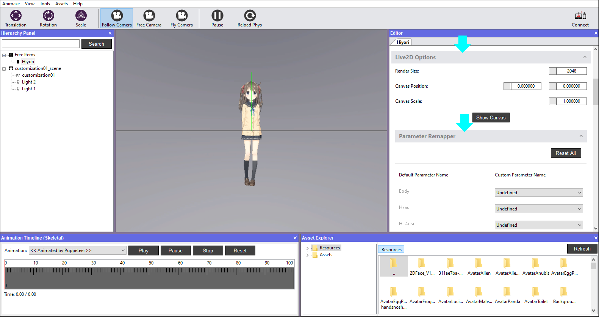
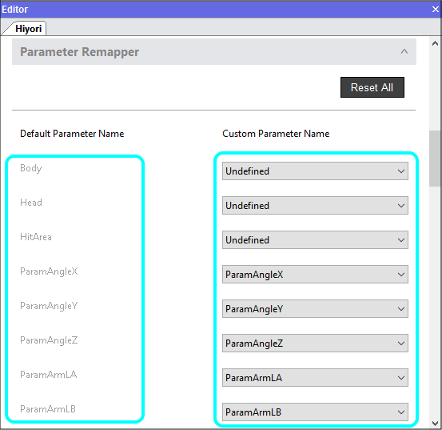
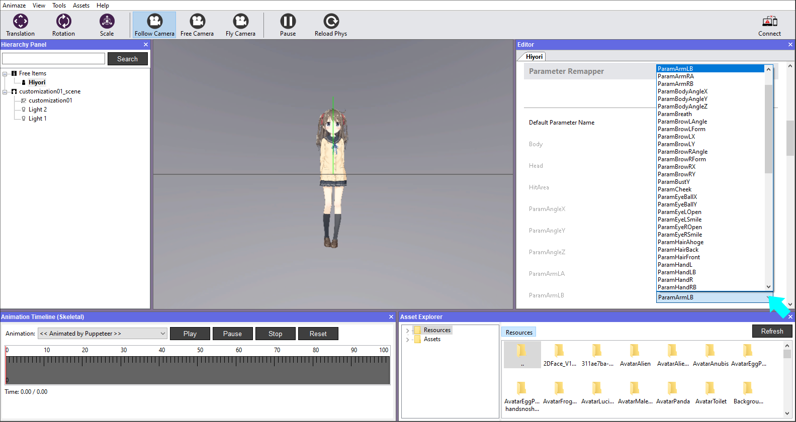

アバターのアニメーション入力をリマッピングする方法
Animazeのリターゲティングシステムは、Live2Dモデルが非常に具体的なアニメーション入力を有していることを想定します。スタンダードはCubism Editorに準拠しており、Live2Dのアバターセクションの「.avatar技術説明書」でご覧いただくことができます。
反復をすばやく行うために、エディターは、リターゲティングシステムのスタンダードに合わせてモデルのアニメーション入力をリマッピングする方法を提供しています。
行うための手順：
Animazeエディターを開きます
1. エディターパネルでスクロールダウンして、「Live2Dのオプション」を見つけて展開し、「パラメーターのリマッパー」をクリックして展開します

2. 左側の列は想定されるアニメーション入力の名前であり、右側では以下のように正しいものが自動的に検出され、結び付けられます。
注記：
-
Live2Dモデルに想定される入力がない場合、「定義なし」の入力が表示されます

入力がエディターによって自動的にピックアップされない場合、最もあり得る原因は、アーティストがCubismで入力を作成していなかったことです。
-
右側の列のドロップダウンに表示されるリスト は、インポート時にLive2Dモデルから自動検出されたものです。

3. アニメーション入力のリマッピングが完了したら、変更を保持するために、アイテムを保存する必要があります。

アイテムを保存